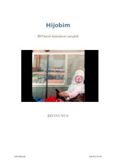

HDiniy erkinlik va hijob yo'lidagi hayotiy sinovlar haqidagi ta'sirli xotiralar.
Mazkur kitob muallifning bolalik yillaridagi xotiralari va hijob kiyish yo'lida boshidan kechirgan sinovlari haqida hikoya qiladi. Asarda diniy erkinlik, taqvo va Allohning amrlariga itoat etish muhimligi oyat va hadislar asosida yoritib berilgan.